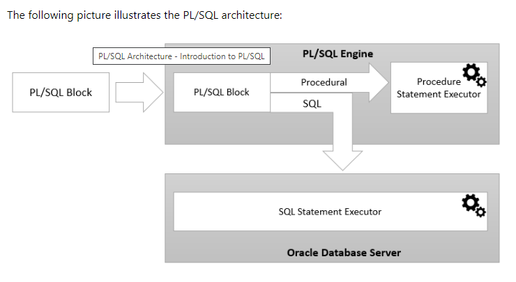

PL/SQL
~PL/SQL stands for “Procedural Language extensions to the Structured Query Language”. SQL
is a popular language for both querying and updating data in the relational database management systems (RDBMS).
PL/SQL adds many procedural constructs to SQL language to overcome some limitations of SQL.
Besides, PL/SQL provides a more comprehensive programming language solution for building mission-critical applications on Oracle Databases..
~PL/SQL is a highly structured and readable language. Its constructs express the intent of the code clearly. Also, PL/SQL is a straightforward language to learn.
~PL/SQL is a standard and portable language for Oracle Database development. If you develop a program that executes on an Oracle Database, you can quickly move it to another compatible Oracle Database without any changes.
~PL/SQL is an embedded language. PL/SQL only can execute in an Oracle Database. It was not designed to use as a standalone language like Java, C#, and C++. In other words, you cannot develop a PL/SQL program that runs on a system that does not have an Oracle Database.
~PL/SQL is a high-performance and highly integrated database language. Besides PL/SQL, you can use other programming languages such as Java, C#, and C++. However, it is easier to write efficient code in PL/SQL than other programming languages when it comes to interacting with the Oracle Database.
In particular, you can use PL/SQL specific constructs like the FORALL statement that helps improve database performance.
PL/SQL architecture:-
